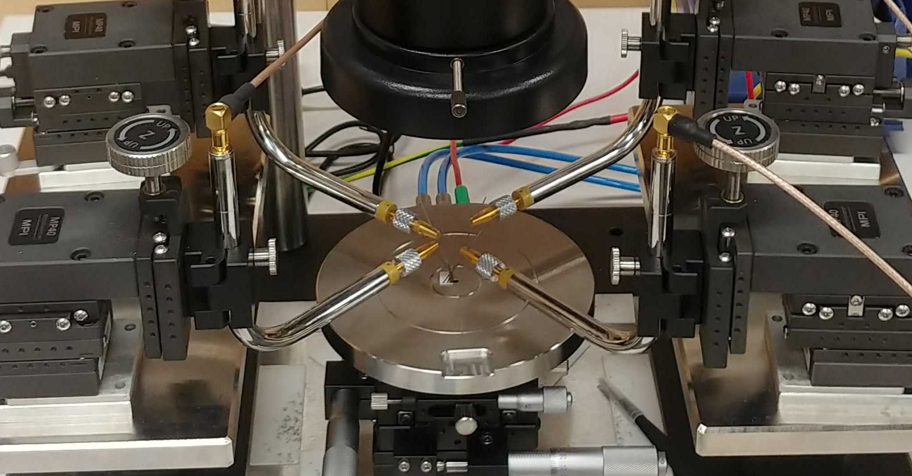

Electrical post-fabrication tuning of aluminum Josephson junctions at room temperature
Christian Križan, Maurizio Toselli, Irshad Ahmad, Hadi Khaksaran, Marcus Rommel, Nermin Trnjanin, Janka Biznárová, Mamta Dahiya, Emil Hogedal, Halldór Jakobsson, Andreas Nylander, Jonas Bylander, Per Delsing, Giovanna Tancredi
